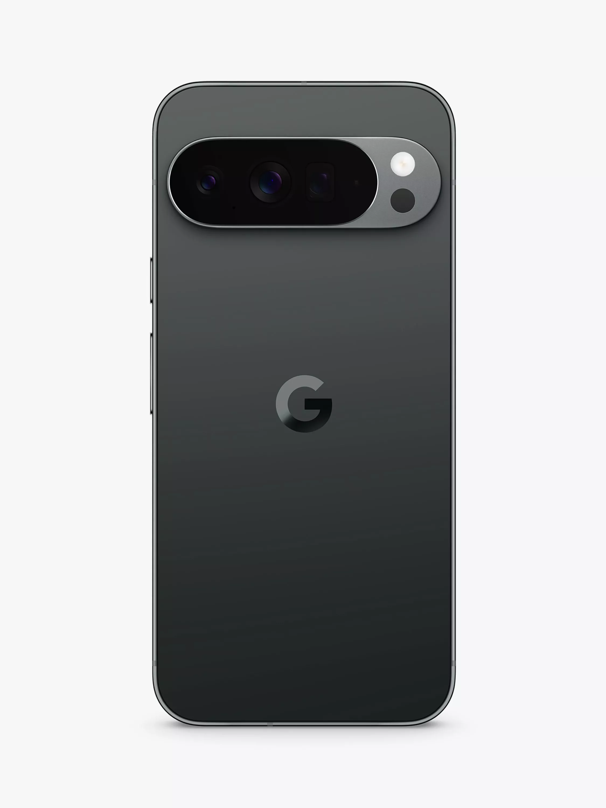
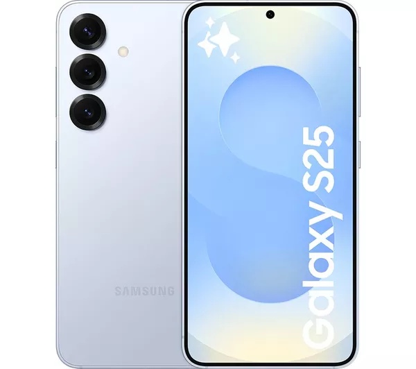
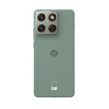

These are the latest news from these different brands and companies. Many different companies release so many new models of their specific phones every year, while most people do not appreciate this as the changes that are made for these new models compared to the previous are very minor, there are others who decide they need to purchase the new models as soon as they release. Most of these changes made with the newer models are usually very technical like the front camera of the iphone 17 now has a 170hz refresh rate compared to the iphone 16’s 60hz and so on. These changes may not seem like all that much, however over time these changes start to add up as more and more models release which will give the user a more refined and better experience using these phones, so I have added images of different companies most recent models for their brand of mobile along with a link to direct you to their page and search for these models to see more details about them.
| Apple | Samsung | Motorola | |
 |
 |
 |
 |
| This is an image of the newest model from Apple which is the iphone 17pro, this phone has a new 48mp telephoto camera which allows for up to 8x zoom in with the camera. This model also includes an A19 pro chip which offers up to 40% better performance compared to the iphone 16pro. This model also comes with a Vapor cooling chamber. This new cooling chamber helps manage the heat produced from the previously mentioned pro chip, this improves performance and battery life. | This is an image of the newest release for the google pixel phone which is the google pixel 9, this phone has a new design which includes a flat back, a camera that does not meet the edges of the phone, polished glass rear and a metal frame, which is a big difference compared to the google pixel 8, this new design also allows the phone to feel better to hold and use. This model also comes with camera upgrades which is a new ultra wide camera, a 48mp ultrawide-angle camera with a bright autofocus lens. This model also comes with better battery life and faster charging as it now supports 27W fast charging which the previous models did not support. There is also better performance and chipset with this new model as it is powered by a tensor G4 chip, 8 next generation CPU cores along with an increase in RAM. | This is an image of the newest samsung galaxy s25 which comes with multiple improvements over the previous models such as, better performance because this model is powered by the Snapdragon 8 Elite SoC, which offers up to 39% NPU, 24% GPU, and 19% CPU which is a significant improvement compared to the snapdragon 8 gen 3 used in the galaxy S24. This model also comes with an increase to the display on the screen as there is now a 6.2 inch FHD+ display and a 6.7inch QHD+ display with a 1-120hz refresh rate which offers a more dynamic visual experience. There is also a new improvement to the camera on this model which as it now has a quad-camera array with a 50mp main camera, a 12mp ultrawide camera, and a 10mp telephoto camera which provides many more capabilities with photography. | This is an image of the newest motorola phone, being the motorola moto g56 which comes with many new upgrades such as, a processing upgrade which now includes a 2.6GHz MediaTek Dimensity 7060 chipset which offers better performance and efficiency. There is now a better display size with this model that being 6.72inches allowing for a better viewing experience. This model now comes with water resistance which the previous did not, the model now includes a IP68/IP69 certification, that makes the device more durable and resistant to water and dust. |